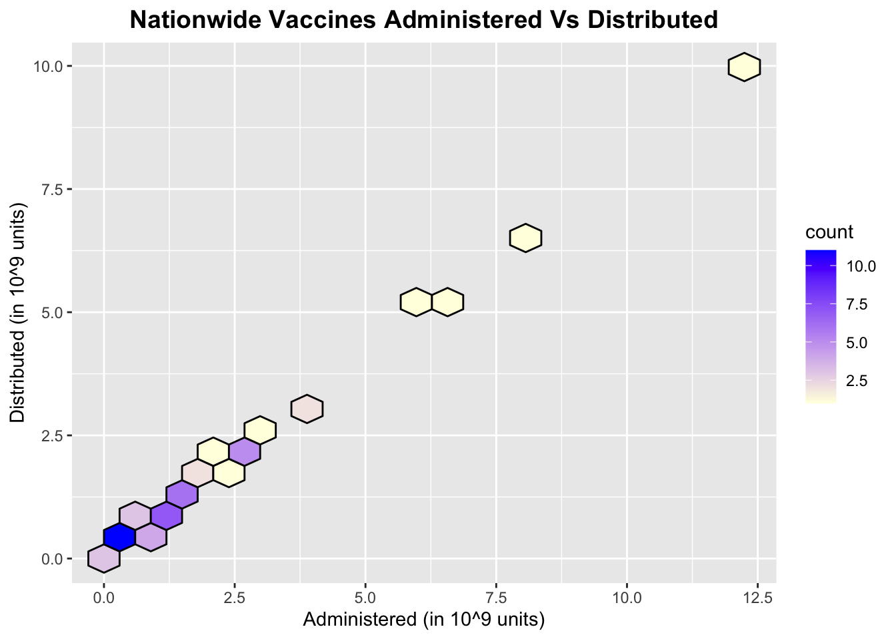
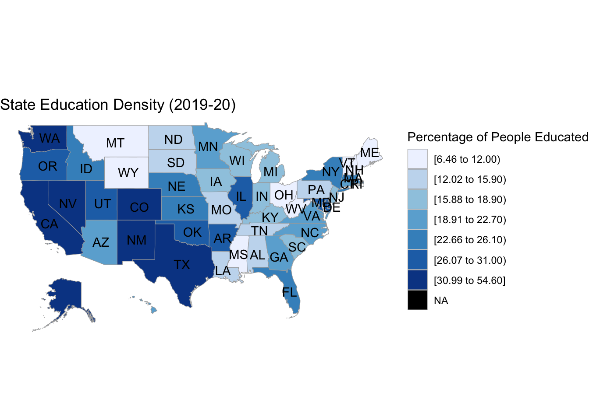
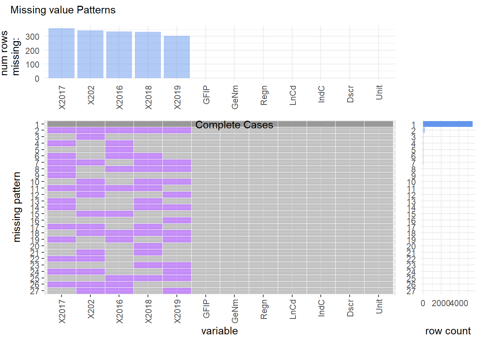
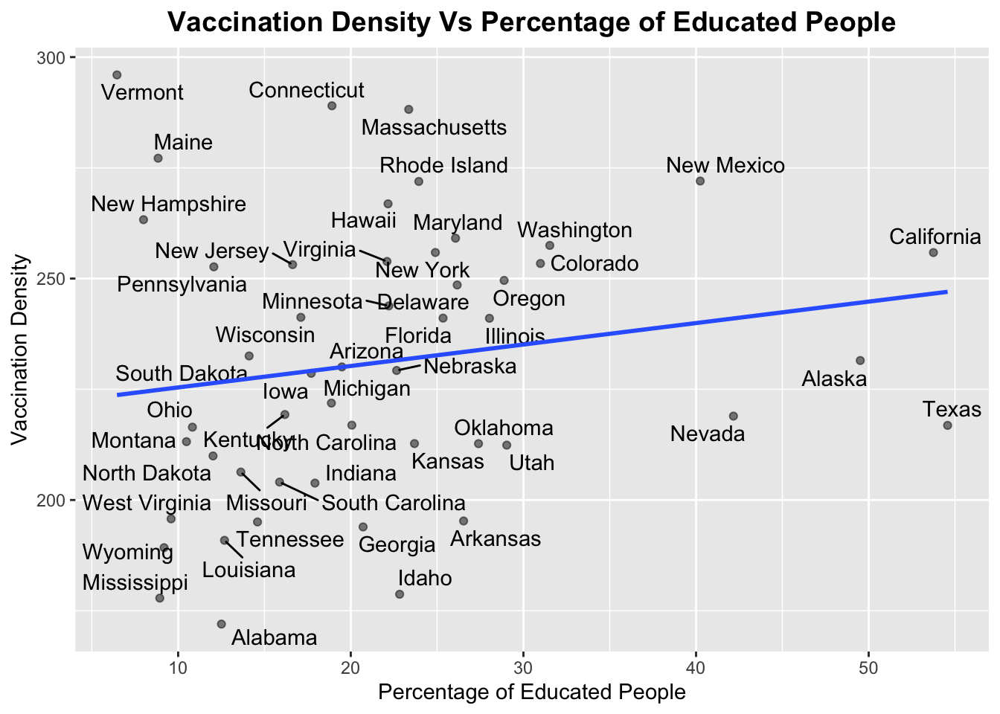
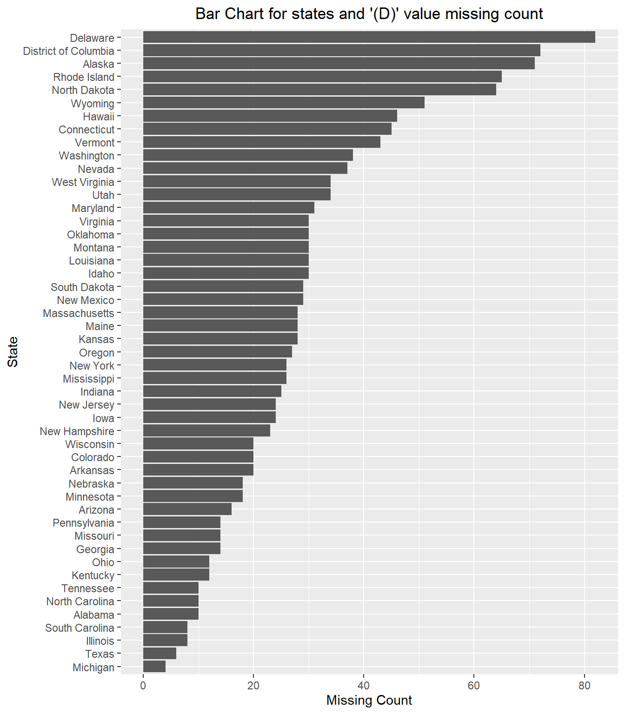
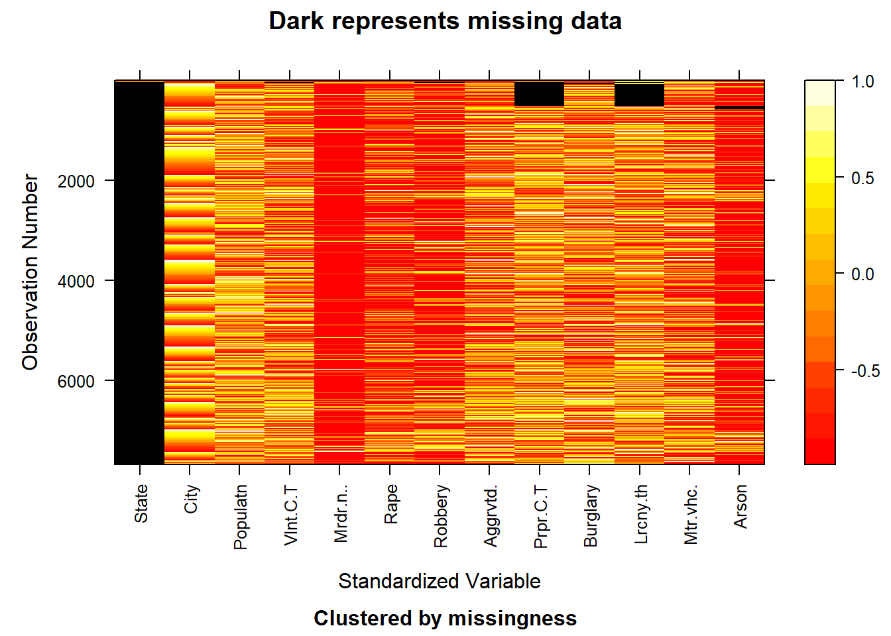
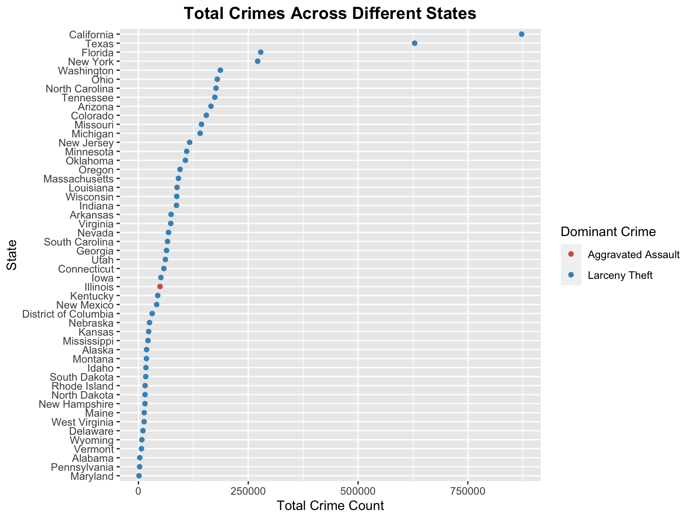

Chapter 4 Missing values
4.1 Missing Value Analysis for Vaccination Dataset
4.1.1 Missing Value Pattern Plot
column name on xticks are abbreviated and rotated by 90 degree to avoid overlapping due to large column names
The vaccine dataset consists of 56 unique missing patterns. The most common pattern is when there are missing values in the first column which consists of around 90 percent of all the rows. Also, the dataset consist of a few number of rows with no missing values in them. Further, the last two columns do not contain any missing values in them.
4.1.2 Cleveland Plot
This Cleveland Plot indicates the number of missing values as per the Distributed column of each Location. Further, only the top 10 Location’s are selected because there was no significant missing value count for other locations. Since, this column had the maximum number of missing values, it is important to analyze this column before we can finally deduce any conclusions. As indicated by the graph, MH (Marshall Islands) has the highest number of missing values in the Distributed column.
4.1.3 Raster Missing Plot

The above plot indicates that there are considerable number of missing values for Distributed vaccines from Nov 2020 to March 2021 for each location. It is quite surprising that there was no data on vaccines distributed between this time frame. One of the reasons might be due to some regulations wherein different states were not sharing the information on the number of vaccines distributed to the hospitals.
4.1.4 Bar plot for number of missing values by Date column
To verify and quantify the raster plot above, we have plotted a bar plot for the Distributed vaccine column against the number of missing values for each date. This plot again confirms the deductions drawn from the raster plot that Nov 2020 to March 2021 timeframe contains maximum missing values for the distributed column. Further, this plot gives us the relative comparison of missing values for each unique date present in the dataset.
4.2 Missing Value Analysis for Employment Dataset
Legend for missing data
(NA): Not available.
(D): Not shown to avoid disclosure of confidential information; estimates are included in higher-level totals.
For analysis purposes, we consider the employment data from the year 2016 to 2020. We observe that similar number of values are missing for the columns which have certain values missing.
4.2.1 Missing value patterns when only NA is considered as missing values

To answer the question as to is there any correlation between the vaccination rates and the level of employment in a particular state, we consider the employment data for each state in the United States. The dataset consists of the number of individuals employed in a given sector across all the states. Example of some of the employment categories are Air transportation, Telecommunications, Real Estate etc. We plot the visna style plot to analyze the number of missing value patterns in the dataset.
The results of the plot indicate that there are only two patterns of missing values in the dataset. Either all the values are present for all columns or the columns containing the employed people in a particular sector for a given year are missing. The second pattern indicates that if the number of people employed in industry ‘X’ is missing for the year 2016, then it is missing for all the years from 2016-2020.
Now after getting the description of the employment whose values are missing, we notice that only the numbers pertaining to the category “Internet Publishing and Broadcasting” are missing. The reason for this can be found from the footnotes of the dataset, where they mention that after the year 2007, the category “Internet Publishing and Broadcasting” was incorporated into “Other Information Services”.
Other than “(NA)” as a missing value, the dataset also has other type of missing values which is “(D)”. The dataset contains “(D)” to indicate that the real value is not shown to avoid the disclosure of confidential information. Some of the categories that have this value are Monetary authorities-central bank, Funds, trusts and other financial vehicles. Also the missing values for each category are almost same for the years taken into consideration. The above pattern is observed when “(D)” is not considered as an NA value.
4.2.2 Missing value patterns when both NA and D(confidential) are considered as missing values

We observe that multiple patterns emerge when the entry “(D)” is considered as an NA value. We can see that the year 2017 has the most number of missing values followed by the year 2020 and so on. A total of 27 different missing patterns can be identified from the dataset.
4.2.3 Job Description Considered as “(D):Confidential” for the year 2020

“Funds, trusts and other financial vehicles” is the job description with maximum number of confidential classified values.
4.2.4 Analysis of missing values only under the category “(D)”:

As clearly visible from graph, we notice that when the data from the years 2016-2020 is taken into consideration, Delaware is the state which has the maximum number of values under the category of “(D): Not shown to avoid disclosure of confidential information”. On the other hand, Michigan is the state with least number of such values.
Further analysis also yields that the states California and Florida have no such rows containing the value “(D)”.
4.3 Missing Value Analysis for Crime Dataset
4.3.1 Using Heatmap to observe the missingness in the dataset

As evident from the heatmap above, the State column has the the most number of missing data points followed by Property Crime Total, Larceny-theft, Arson and Burglary.
4.3.2 Using Heatmap to observe the missing values (with no missing State value)
Using fill, we replaced all missing State values by the respective State name and so the State column has no missing values now. We now observe that Property Crime Total has the most number of missing values followed by Larceny-theft, Arson and Burglary. We also observe that some states like Alabama, Alaska and Arizon (which are the initial observations of the heatmap) have lower number of instances compared to states like Iowa and Kansas (having observation numbers around 2000). Column Population seems to have values on a higher scale compared to other columns while columns like Murder and nonnegligent manslaughter and Arson have values on a lower scale. Based on all the columns, we can observe that the values are not standardized.
4.3.3 Missing Value Patterns Plot Analysis

From the plots above we can deduce that Property Crime Total and Larceny-theft have roughly the same percentage of missing rows. We can observe that there are 12 unique missing patterns. We also observe that about 90% of the data does not have any missing values in them. Property Crime Total and Larceny-theft contribute towards most of the missing values while other variables have relatively lower missing values.
4.4 Missing Value Analysis for Education, Population and Election Dataset
These three dataset did not had any missing values in them.